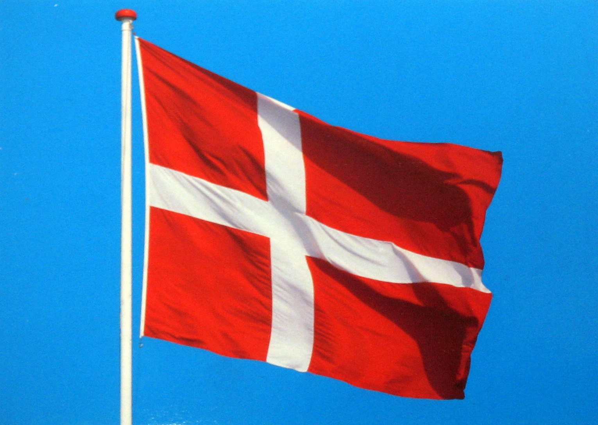
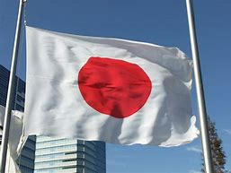
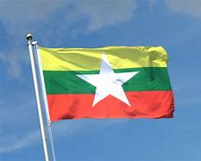

| Denmark | Japan | Myanmar | Australia |
Denmark ~ Denmark is a Nordic country in the south-central portion of Northern Europe.
Japan ~ Japan is an island country in East Asia
Myanmar ~ Myanmar , officially the Republic of the Union of Myanmar, also known as Burma (the official name until 1989)
Australia ~ Australia, officially the Commonwealth of Australia, is a sovereign country comprising the mainland of the Australian continent, the island of Tasmania